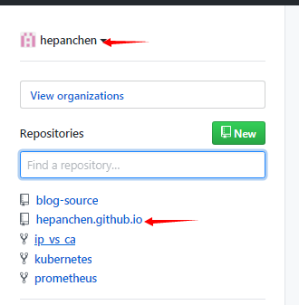

POSTS
Github pages + Hugo配置
Github pages 配置
- 创建以用户名开头+.github.io的项目 
Hugo 配置
hugo 入门
hugo github pages 整合
trouble shooting
hugo 未发布pags的问题
hugo --cleanDestinationDir -c content -v -D 构建webhugo 图片放置路径和相对路径不顺手的问题
使用 hugo-image 插件解决apm deploy插件的问题
git remote set-url https://<username>:<password>@github.com/<username>/<repo_name>.git git config --global credential.helper wincred apm publish 0.0.0